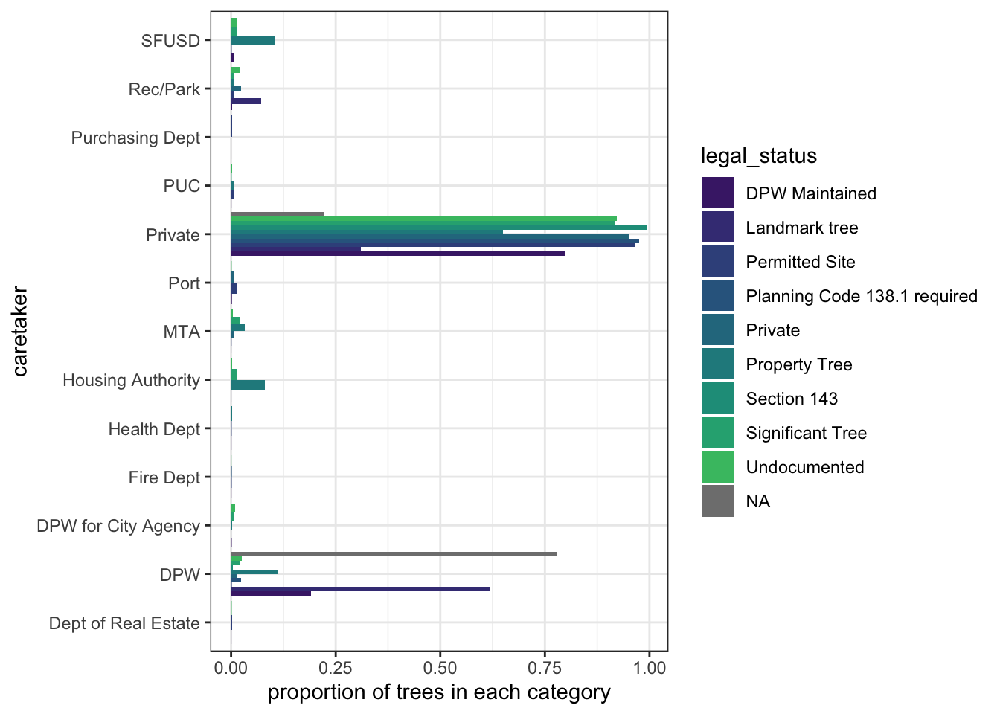
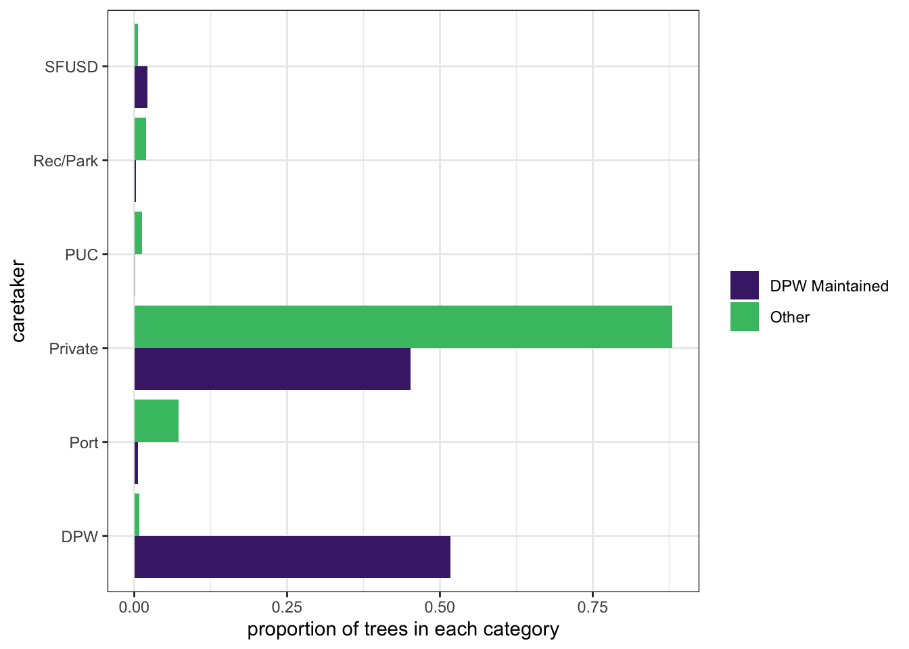
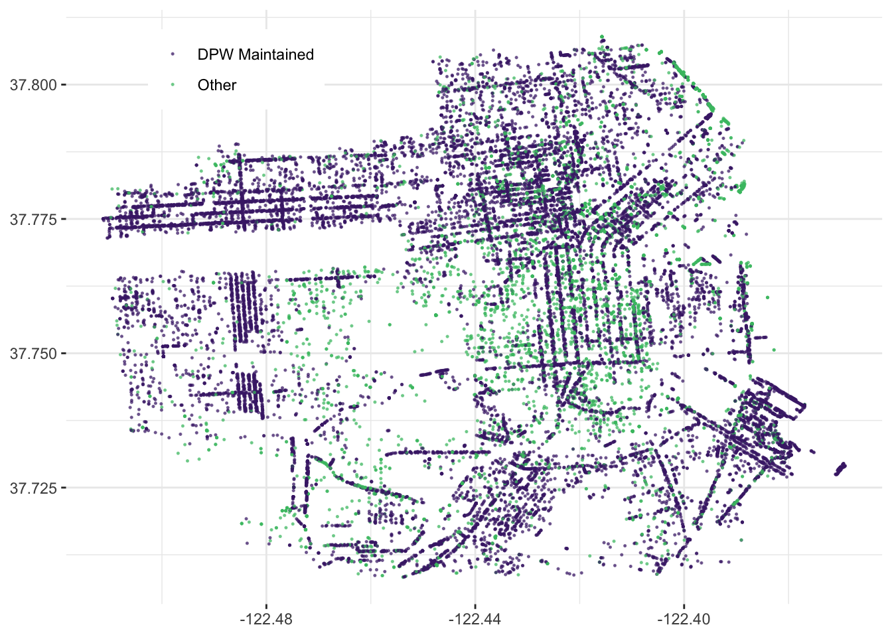
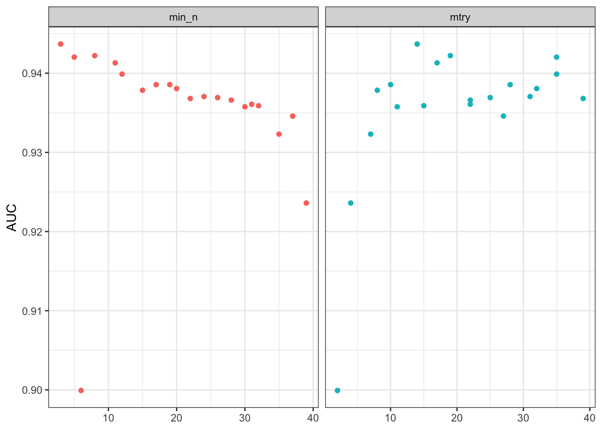
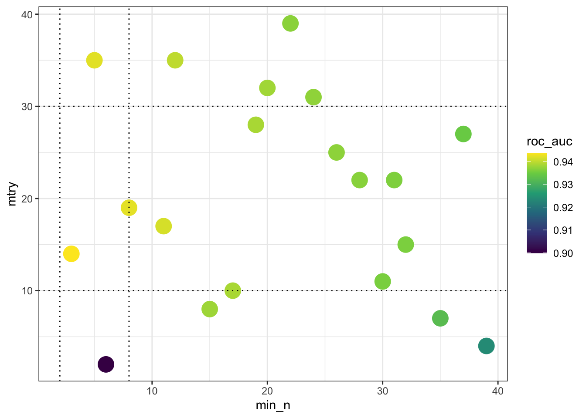
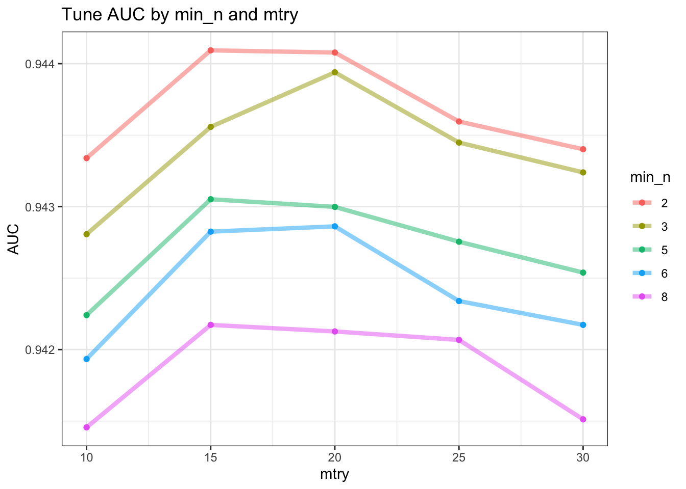
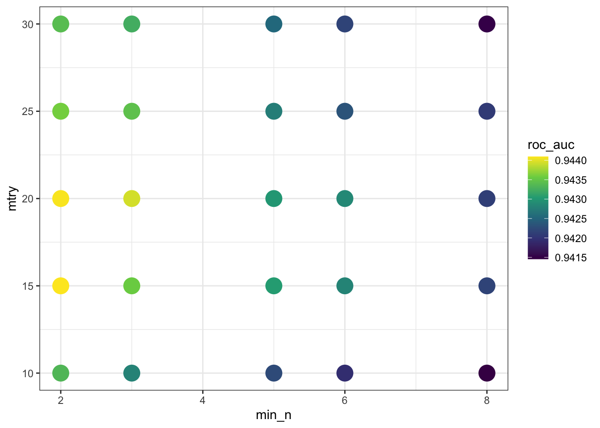
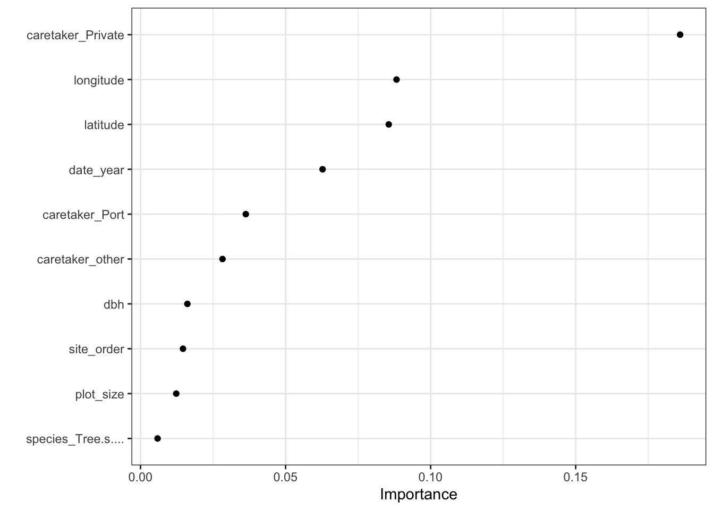
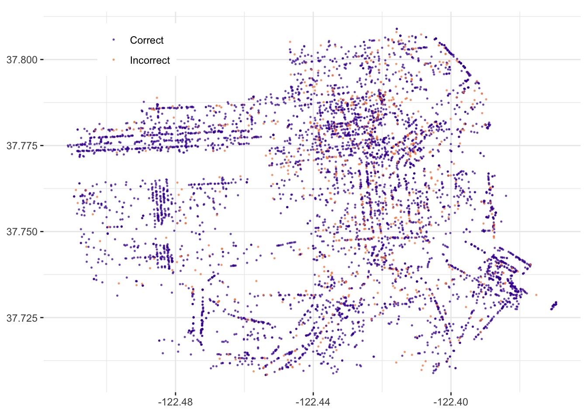

sftrees <- read_csv("https://raw.githubusercontent.com/rfordatascience/tidytuesday/master/data/2020/2020-01-28/sf_trees.csv",
show_col_types = FALSE)The goal is the make a predictor of whether a tree tracked in San Francisco is a Department of Public Works maintained legal status tree, or some other legal status.
Get data
This is a 2020-01-28 Tidy Tuesday dataset. These data are from the San Francisco Public Works’ Bureau of Urban Forestry.
Preliminary exploration of data
head(sftrees)Legal status
sftrees %>%
count(legal_status, sort = TRUE) %>%
mutate(percent = round( n / sum(n) * 100, digits = 1))sftrees %>% count(legal_status, caretaker, sort = TRUE) %>% head(20)So the legal_status of “DPW Maintained” does not equate with a caretaker of “DPW”—in fact, most of the time, DPW-legal status trees are privately taken care of.
col_plot_legalstatus_by_caretaker <- sftrees %>%
count(legal_status, caretaker) %>%
add_count(caretaker, wt = n, name = "caretaker_count") %>%
filter(caretaker_count > 50) %>%
group_by(legal_status) %>%
mutate(percent_legal = n / sum(n)) %>%
ggplot(aes(percent_legal, caretaker, fill = legal_status)) +
geom_col(position = "dodge") +
scale_fill_viridis_d(option = "D", begin = 0.1, end = 0.7, na.value = "grey50") +
labs(x = "proportion of trees in each category")
col_plot_legalstatus_by_caretaker
NAs in data
sftrees %>%
summarise(across(everything(), ~ sum(is.na(.x))),
"n" = n()) %>%
relocate(n) %>%
t() %>% as_tibble(.name_repair = "minimal", rownames = "col_name")Instead of using glimpse(), I’m using R’s native t(), or transpose, to print the results lengthwise instead of as columns across the page. The n row at the start shows how many rows are in the dataframe; the other named columns show how many NAs are in the data in each column. The date and dhb (Diameter at breast height) columns show significant levels of NAs (64.5% and 21.7%, respectively).
Species
sftrees %>% count(species, sort = TRUE) %>% head(20)plot_size
sftrees %>% count(plot_size, sort = TRUE) %>% head(20)Prepare data for model
trees_formodel <- sftrees %>% #trees_df
mutate(
"legal_status" = case_when(
legal_status == "DPW Maintained" ~ legal_status,
TRUE ~ "Other"),
"plot_size" = parse_number(plot_size)) %>%
select(-address) %>%
na.omit() %>%
mutate_if(is.character, factor)Warning: There was 1 warning in `mutate()`.
ℹ In argument: `plot_size = parse_number(plot_size)`.
Caused by warning:
! 109 parsing failures.
row col expected actual
10979 -- a number TR
13245 -- a number CUT
13495 -- a number TR
13501 -- a number TR
13502 -- a number TR
..... ... ........ ......
See problems(...) for more details.head(trees_formodel)col_plot_legalstatus_by_caretaker <- trees_formodel %>%
count(legal_status, caretaker) %>%
add_count(caretaker, wt = n, name = "caretaker_count") %>%
filter(caretaker_count > 50) %>%
group_by(legal_status) %>%
mutate(percent_legal = n / sum(n)) %>%
ggplot(aes(percent_legal, caretaker, fill = legal_status)) +
geom_col(position = "dodge") +
scale_fill_viridis_d(option = "D", begin = 0.1, end = 0.7, na.value = "grey50") +
labs(fill = NULL,
x = "proportion of trees in each category")
col_plot_legalstatus_by_caretaker
Quick plot/map of data
tree_loc_plot <- trees_formodel %>%
ggplot(aes(x = longitude, y = latitude, color = legal_status)) +
geom_point(alpha = 0.6, size = 0.25) +
labs(color = NULL, x = NULL, y = NULL) +
theme(panel.border = element_blank(),
legend.position = c(0.1, 0.9), legend.justification = c(0, .5)) +
scale_color_viridis_d(option = "D", begin = 0.1, end = 0.7)Warning: A numeric `legend.position` argument in `theme()` was deprecated in ggplot2
3.5.0.
ℹ Please use the `legend.position.inside` argument of `theme()` instead.tree_loc_plot
Build Model
set.seed(123)
trees_split <-initial_split(trees_formodel, strata = legal_status)
trees_train <- training(trees_split)
trees_test <- testing(trees_split)
nrow(trees_train); nrow(trees_test)[1] 17881[1] 5961Feature engineering for the date
tree_rec <- recipe(legal_status ~ ., data = trees_train) %>%
update_role(tree_id, new_role = "ID") %>%
step_other(species, caretaker, threshold = .01) %>%
step_other(site_info, threshold = .005) %>%
step_dummy(all_nominal(), -all_outcomes()) %>%
step_date(date, features = c("year")) %>%
step_rm(date) %>%
step_downsample(legal_status)
tree_prep <- prep(tree_rec)
juiced <- juice(tree_prep)Review data preprocessing results
juiced %>% count(legal_status)Set up model hyperparameters
tune_spec <- rand_forest(
mtry = tune(), #
trees = 1000, # number of trees to start with
min_n = tune() # how many data points in a node to keep splitting further
) %>%
set_mode("classification") %>%
set_engine("ranger")Set up workflow
convenience functions
tune_wf <- workflow() %>%
add_recipe(tree_rec) %>%
add_model(tune_spec)Train-test some model hyperparameters
set.seed(234)
trees_folds <- vfold_cv(trees_train)
set.seed(345)
doParallel::registerDoParallel()
tune_res <- tune_grid(
tune_wf,
resamples = trees_folds,
grid = 20)i Creating pre-processing data to finalize unknown parameter: mtryview results
tune_res %>% select_best("accuracy")tune_res %>% select_best("roc_auc")side_facet_n_mtry_plot <- tune_res %>%
collect_metrics() %>%
filter(.metric == "roc_auc") %>%
select(mean, min_n, mtry) %>%
pivot_longer(min_n:mtry,
values_to = "value",
names_to = "parameter"
) %>%
ggplot(aes(value, mean, color = parameter)) +
geom_point(show.legend = FALSE) +
facet_wrap(~parameter, scales = "free_x") +
labs(x = NULL, y = "AUC")
side_facet_n_mtry_plot
nonortho_gid_n_mtry_plot <- tune_res %>%
collect_metrics() %>%
filter(.metric == "roc_auc") %>%
select(mean, min_n, mtry) %>%
ggplot(aes(x = min_n, y = mtry, color = mean)) +
geom_point(size = 6) +
geom_hline(yintercept = 10, linetype = "dotted") +
geom_hline(yintercept = 30, linetype = "dotted") +
geom_vline(xintercept = 2, linetype = "dotted") +
geom_vline(xintercept = 8, linetype = "dotted") +
scale_color_viridis_c(option = "D") +
labs(color = "roc_auc")
nonortho_gid_n_mtry_plot
While it’s not a regular grid (of orthogonal combinations that would allow for ceteris paribus testing) of min_n and mtry, but we can get an idea of what is going on. It looks like higher values of mtry are good (above about 10) and lower values of min_n are good (below about 10). We can get a better handle on the hyperparameters by tuning one more time, this time using regular_grid(). Let’s set ranges of hyperparameters we want to try, (inside of the dotted line box displayed on the 2D plot above) based on the results from our initial tune.
Train-test some model hyperparameters
set.seed(456)
rf_grid <- grid_regular(mtry(range = c(10, 30)),
min_n(range = c(2, 8)),
levels = 5)
nrow(rf_grid)[1] 25set.seed(456)
doParallel::registerDoParallel()
tune_reg_res <- tune_grid(tune_wf,
resamples = trees_folds,
grid = rf_grid)view results
tune_reg_res %>% select_best("accuracy")tune_reg_res %>% select_best("roc_auc")grid_n_mtry_plot <- tune_reg_res %>%
collect_metrics() %>%
filter(.metric == "roc_auc") %>%
mutate(min_n = factor(min_n)) %>%
ggplot(aes(mtry, mean, color = min_n)) +
geom_line(alpha = 0.5, linewidth = 1.5) +
geom_point() +
labs(title = "Tune AUC by min_n and mtry",
y = "AUC")
grid_n_mtry_plot
nonortho_gid_n_mtry_plot <- tune_reg_res %>%
collect_metrics() %>%
filter(.metric == "roc_auc") %>%
select(mean, min_n, mtry) %>%
ggplot(aes(x = min_n, y = mtry, color = mean)) +
geom_point(size = 6) +
scale_color_viridis_c(option = "D") +
labs(color = "roc_auc")
nonortho_gid_n_mtry_plot
Both 2D plots show that the mtry = 15 and min_n = 2 hyperperamater maximize the AUC for this random forest model.
Finalize the model
best_auc <- tune_reg_res %>% select_best("roc_auc")final_rf <- finalize_model(tune_spec, best_auc)
final_rfRandom Forest Model Specification (classification)
Main Arguments:
mtry = 15
trees = 1000
min_n = 2
Computational engine: ranger Understand final model
final_rf_vip_plot<- final_rf %>%
set_engine("ranger", importance = "permutation") %>%
fit(legal_status ~ ., data = select(juiced, -tree_id)) %>%
vip(geom = "point")
final_rf_vip_plot
Satisfyingly, whether the caretaker is private makes a large difference, and latitude and longitide each make a large (and approximately equal) contribution.
Apply the final model
final_wf <- workflow() %>%
add_recipe(tree_rec) %>%
add_model(final_rf)
final_result <- final_wf %>% last_fit(trees_split)final_result %>% collect_metrics()This is a great result, because it means we did not over fit to the training data set. This is the AUC we can expect for new San Francisco Trees.
Make predictions
final_result_ano <- final_result %>%
collect_predictions() %>%
mutate("correct_prediction" = if_else(legal_status == `.pred_class`, "Correct", "Incorrect")) %>%
bind_cols(trees_test)
tree_correct_loc_plot <- final_result_ano %>%
ggplot(aes(x = longitude, y = latitude, color = correct_prediction)) +
geom_point(alpha = 0.6, size = 0.25) +
labs(color = NULL, x = NULL, y = NULL) +
theme(panel.border = element_blank(),
legend.position = c(0.1, 0.9), legend.justification = c(0, .5)) +
scale_color_viridis_d(option = "C", begin = 0.1, end = 0.7) +
coord_equal()
tree_correct_loc_plot
There is some degree of spatial bias in the incorrect assignment of legal status of the SF Trees.